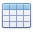
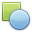
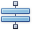
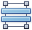

Report Controls
In general, report controls allow you to present information of different kinds (e.g., simple or formatted text, pictures, tables, etc.) in your static and dynamic reports, and to adjust your report's layout (by organizing controls within panels, and inserting page breaks at the required positions).
The following table lists the available controls (in the same order as in the Toolbox).
| Icon | Description |
|---|---|
 |
The most basic Label control is intended to display static or dynamic text or both in your report. In addition, it can be used to calculate standard summary functions across a data field. |
| The Check Box control is intended to display True/False or Checked/Unchecked/Indeterminate states in a report by displaying (or not) a check mark, which can be accompanied by a text description. | |
 |
The Rich Text control allows you to display formatted text in your report. It can display static or dynamic text or both. You can also load content to the Rich Text from an external TXT or RTF file (which can contain images). |
| The Picture Box control is intended to display images of numerous formats in a report. An image can be loaded from an external file, from a bound data source, or from a web location using the specified URL. | |
| The Panel control is a container that frames separate report controls to allow them to be easily moved, copied and pasted, and visually unite them in the report's preview (with borders or a uniform color background). | |
|  | The Table control is designed to arrange information in a tabular layout. It may contain any number of rows comprised of individual cells. Both rows and cells can be selected and customized individually. In most aspects, a cell is similar to a Label, but can also contain other controls (e.g., Picture Box or Rich Text). |
 |
The Character Comb control displays text so that each character is printed in an individual cell. |
 |
The Line control draws a line of a specified direction, style, width and color. It can be used for both decoration and visual separation of report sections. The Line cannot cross report bands, as opposed to the Cross-band Line control. |
|  | The Shape control allows you to embed simple graphic objects into your report. You can choose one of the multiple predefined shapes (e.g., rectangles, ellipses, arrows, polygons, crosses and brackets of various kinds). |
 |
The Barcode control transforms its content into a barcode of the specified type. Multiple standard barcode types are supported. |
 |
The Zip Code control renders a numeric postal code that is used to identify the mail address in some countries. This control is not related to the Zone Improvement Plan (ZIP) code used by the United States Postal Service. |
 |
The Chart is a sophisticated control used to embed graphs into your report. It graphically represents a series of points using numerous 2D or 3D chart types. A Chart can be populated with points both manually (by specifying arguments and values for each point) and dynamically (by connecting it to the report's data source or binding it to a separate one). See Chart with Static Series and Chart with Dynamic Series for more information. |
| The Gauge control provides you with the capability to embed graphic gauges into your report. | |
| The Sparkline control displays a compact chart that is commonly used to reflect the flow of data for every row in a report. | |
 |
The Pivot Grid control represents dynamic data (obtained from an underlying data source) in a cross-tabulated form to create cross-tab reports, similar to Pivot Tables in Microsoft Excel®. Column headers display unique values from one data field, and row headers - from another field. Each cell displays a summary for the corresponding row and column values. By specifying different data fields, you can see different totals. This allows you to get a compact layout for a complex data analysis. |
 |
The Subreport control allows you to include other reports in your current report. To learn more, see Master-Detail Report (Subreports). |
| The Table Of Contents control generates a table of contents based on bookmarks specified for report elements. | |
 |
The Page Info control is intended to add page numbers and system information to a report (the current date and time or the current user name) into your report. As with many other controls, you can format this control's content. |
 |
The Page Break control's sole purpose is to insert a page delimiter at any point within a report. |
|  | The Cross-band Line control allows you to draw a line through several report bands. This can be useful if you need to visually emphasize a section consisting of multiple band areas. In other aspects, it is similar to a regular Line. |
|  | The Cross-band Box control allows you to draw a rectangle through several report bands. This can be useful if you need to visually encompass a section consisting of multiple band areas. |
To learn how to create report controls and change their layout, refer to Create and Delete Report Elements and Adjust the Layout of Report Elements.